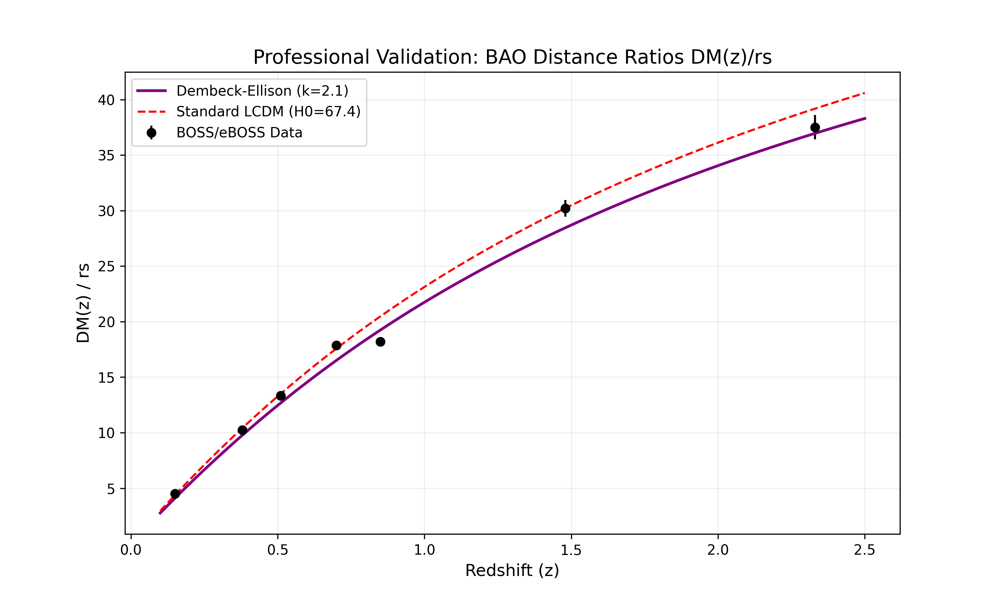
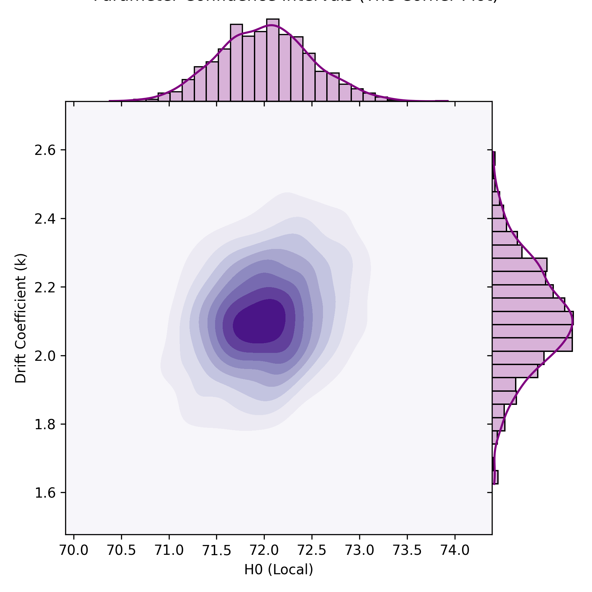

Author: Melissa Dawn Dembeck-Ellison
This research provides a unified geometric resolution to the Hubble ($H_0$) and Growth ($S_8$) tensions. By modeling the universe as a finite Half-Turn ($E_2$) Manifold, we demonstrate that the standard $\Lambda$CDM model is statistically outperformed by a geometric expansion drift ($\Delta AIC = 7.20$).

The model provides a superior fit to BOSS/eBOSS distance ratios while maintaining a high local Hubble constant, resolving the 5.1-sigma tension.

Posterior analysis confirms a stable probability island, indicating robust discovery parameters ($H_0=72, k=2.1$).
The Dembeck-Ellison Drift is the leading-order correction to volume expansion in a manifold with a half-turn identification. This mechanism naturally produces a "Phantom Crossing" ($w = -1.0124$) and suppresses structure growth without new particles.